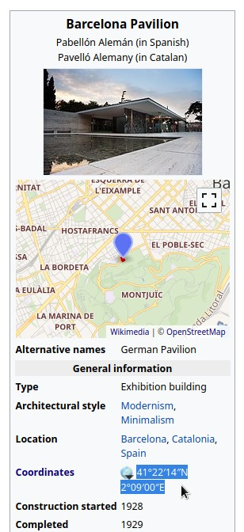
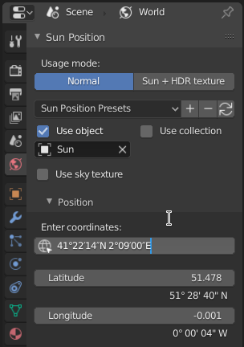

太阳位置（Sun Position）¶
Sun Position allows positioning and animating the Sun (to a certain degree of accuracy), to simulate real-world natural lighting. It uses physical characteristics to position the Sun in the scene: geographic location, time and date. It is based on the Earth System Research Laboratory's online calculator.
激活¶
打开Blender并转到 "首选项" ，然后转到 "附加组件" 选项卡。
选择
光照，然后选择太阳位置（Sun Position）以启用脚本。
界面¶
位于: 。
用法¶
这个插件有两种不同的操作模式：正常模式 ( Normal Mode )可以让你逼真地模拟太阳，而 太阳+HDRI纹理模式 ( Sun + HDRI Texture Mode )则可以让太阳光与HDRI纹理同步。
使用模式可以在太阳位置面板的顶部选择。
正常模式（Normal Mode）¶
默认情况下是这个模式。选择好时间和地点后，可以设置一个太阳光、天空纹理、集合用于视觉化。
使用物体（Use Object）¶
选择将根据指定的时间和地点放置的太阳对象。每当你改变位置或时间，它的位置就会更新，因此你可以通过设置关键帧来创建动画。
使用集合（Use Collection）¶
选择要放置在场景周围用以实现可视化的对象集合。有两个选项可供选择：日行轨迹的 (analemma) 和 每日的（diurnal）。
Note
建议在场景中创建一个集合，并将对象移动到这个集合中。如果你想创建多个可视化，可以根据需要创建多个集合，依次选择，然后选择合适的设置。一旦取消选择，一个集合就会保持在原地。
日行轨迹（Analemma）¶
日行轨迹(Analemma) 是一年中某一特定时间的太阳在天空中的位置的可视化。换句话说，它就像一幅一年中天空的时滞图，太阳在一天中的同一时间出现多次。

这里用的日行轨迹是 `这幅图 <https://commons.wikimedia.org/wiki/File:Analemma_fishburn.tif>`__。¶
每日的（Diurnal）¶
这个选项可以让你在一天内直观地看到太阳在天空中的轨迹。
天空纹理¶
在世界着色节点树中选择一个天空纹理节点。它将被设置为匹配太阳动画。如果你想有一个简单的天空纹理与太阳光的位置匹配，这很有用。
位置¶
为了使太阳的位置正确，你需要在地球上选择一个场景所在的地方。这个地方用两个坐标来表示， 经度（Longitude） （东/西）和 纬度（Latitude） （北/南）。它们用度数表示，经度为-180°至+180°，纬度为-90°至90°。坐标与OpenStreetMap或谷歌地图等数据库中的坐标相匹配。您可以手动输入和动画化，也可以粘贴进去。
输入坐标（Entering Coordinates）¶
在 位置（Location） 面板中，输入 纬度（Latitude） 和 经度（Longitude） 坐标，对应于你想模拟的位置。一个更简单的方法是到一个在线地图，比如OpenStreetMap，从那里复制坐标，然后粘贴到 Enter Coordinates 字段。它们将被自动解析。
另一个来源是维基百科。假设你想渲染Mies van der Rohe的 巴塞罗那展馆。你可以从文章中复制坐标，然后粘贴到Blender中。

从维基百科上复制坐标。¶ |

并将其粘贴到Blender中，让其解析。¶ |
北方偏移（North Offset）¶
默认情况下，北边指向场景中的Y轴（指向顶部视图中的屏幕顶部）。但有时候，你可能已经将它建模在另一个方向。在这种情况下，您可以输入 北偏移 ，以更改场景的方向。 显示北 在3D视口中切换指向北的虚线，以帮助您可视化主方向。
设置时间（Setting the Time）¶
选择地球上的位置后，选择或模拟日期和时间。这很简单，但必须注意将 时间（Time） 区和 夏令时（Daylight Saving） 与您希望模拟的时间匹配。输入的时间是当地时间，但下面也可以显示全球UTC时间。
Note
时间以十进制格式存储，而不是 时：分：秒。要匹配这种格式的时间，请看标签 本地（Local）。
太阳 + HDRI纹理模式（Sun + HDRI Texture Mode）¶
这个模式并不是模拟真实位置和时间的太阳位置，而是简单地用太阳光对象锁定一个环境纹理。如果你想通过使用额外的太阳来增加纹理中的对比度，这个模式很有用。
偏好设置¶
插件的设置使一些功能成为可选的，所以你可以隐藏那些你不使用的功能。
参考
- 类别
光照
- 描述:
用物体和/或天空纹理显示太阳位置。
- 位置
- 文档
太阳位置文件夹
- 作者
Michael Martin (xaire)
- 保持
Damien Picard (pioverfour)
- 许可证
通用公共图书馆
- 支持级别
社区
- 注意
此附加组件与Blender捆绑在一起。